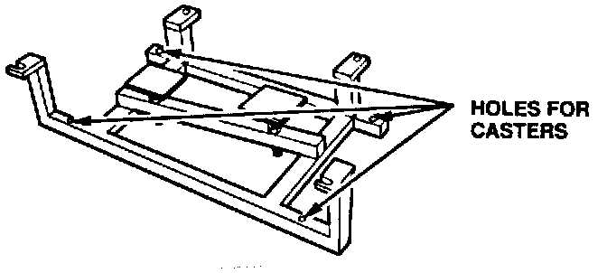
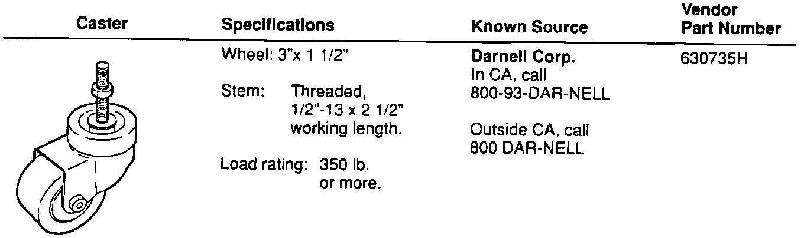
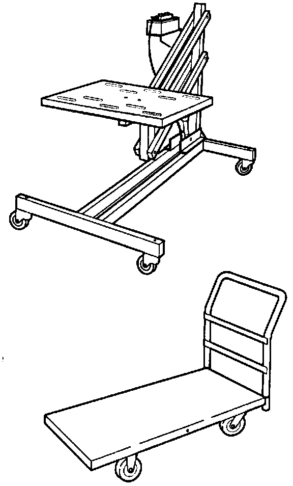

Engine Removal/Installation Fixture

This fixture will be automatically shipped to all Acura dealers. It is not part of the engine removal procedure in the NSX Service Manual. To learn how to use it, watch the "Engine" videotape from the NSX New Model intro series (shipped to all dealers in 1990 as an ACURA Advantage release).
The videotape shows a prototype of the fixture. The final version can be set up in one of the following three ways:

1. Purchase 4 of the casters described here (or their equivalent), and install them in the pre-drilled holes in each corner of the fixture. This is the most convenient way to use the fixture (no other equipment is needed), and it's the least expensive, unless you already have either a lifting table (see 2.) or a platform truck (see 3.).

2. If you have a lifting table (OTC P/N 1585, or equivalent), you can use it (instead of casters) to support the fixture. Secure the fixture to it with at least two 12 mm diameter bolts, one on each side.
3. If you have a platform truck ("warehouse cart") with 2'x 4' platform, 1500 lb. capacity, and removable handle, you can use it (instead of casters) to support the fixture. Drill holes in the platform and secure the fixture to it with at least two 12 mm diameter bolts, one on each side.